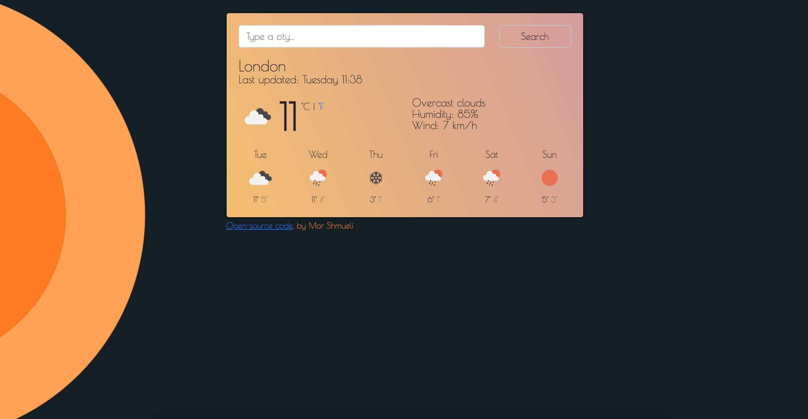

Weather App Project
As my main objective was learning how to code
and integrate API in my project, I opted for
creating proto-persona based on observation
and informal conversations with people.
Instead of asking direct questions on their app use, I would start
with some small talk (literally about the weather!), grasping
informations on how this is affecting their day. From there, the
conversation would follow a natural flow where more details on how the
weather impact their day to day routine would be revealed.
Finally I would ask if they rely on any weather app. Given
that weather forecast has the reputation of not being 100% accurate
and temperatures are perceived differently by each individual, it was
curious and intriguing understanding how different individual engage
with weather app and for what purposes.
Based on those observations I noticed that slang phrases, such as
"It's raining cats and dogs", are as frequently used as the more
traditional ones and, funny enough, may be more effective in
delivering the message.
On the other hand, temperature expressed in degrees, proved a bit
trickier as each person perceives it differently, although
he/she/they would still have a general idea of the weather
conditions.
NOTES: Although phrases might be more effective, they are specific
to the geographical location they are used making them less
appropriate for a global audience.
Degrees, on the other hand, are universal numbers largerly
understood by a greater majority.


Once moved away from the idea of adding descriptive elements and embracing the more traditional numerical one, I worked few technical bits:
- Added the WIND condition as it is pivotal for those living on boats (This I learned from one of the testing session).
- I also added HUMIDITY and a SHORT DESCRIPTION to improve the general idea of the weather condition and hopefully allow people to get a better idea of the temperaure they will experience.
- Enabled the pointer option when the cursor moves on "Search" to re-inforce the button feature.
- Played around with the background colour trying different gradient options. As the app is showing the weather forecats, I liked for the app background to resemble the colour of the sky, possibly a clear sky above the clouds (like the one you experience when flying up a plane). However, I also wanted it to somehow interact with the main page background, so eventually I came to a conclusion that connected the one with the other.
For the main page I opted for a black background with two yellow/orange half circles on the left, while for the app background I decided to animate gradient colours going from warm to cold color variations. The idea is to reproduce the daily motion of the earth around the sun, going from morning to evening.
